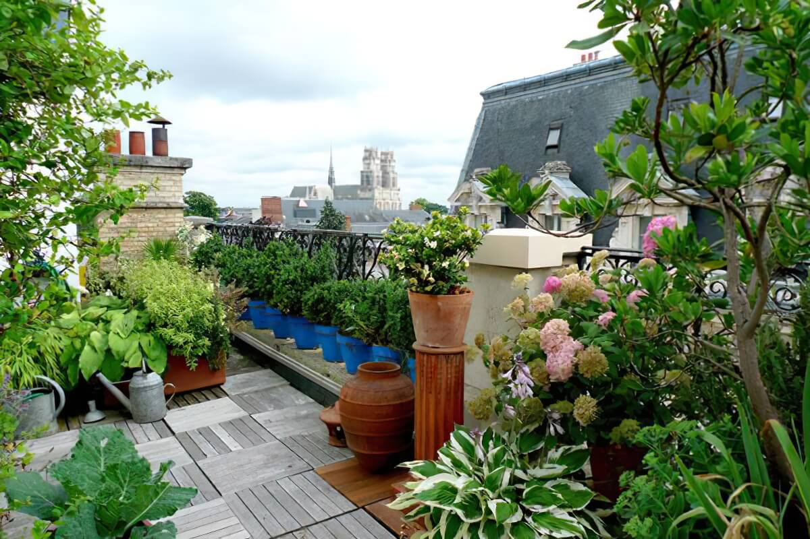
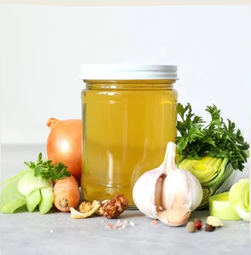
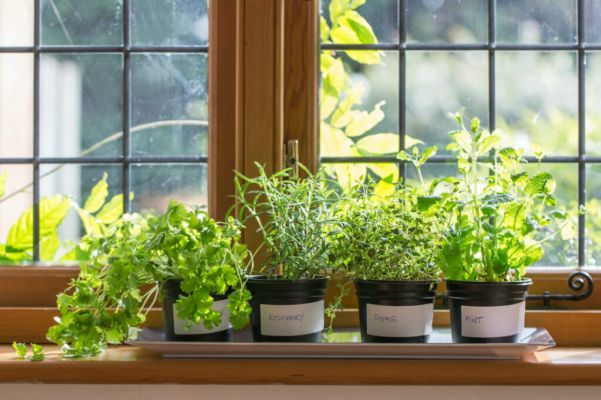
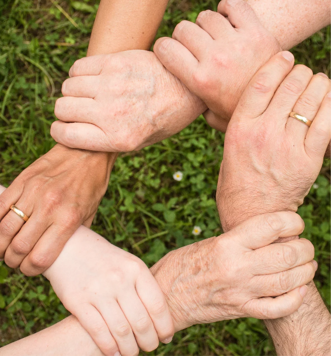

Du willst etwas für die Umwelt und dein Gewissen tun, weißt aber nicht wie? Wir zeigen dir wie du deine Frühlingszwiebeln unsterblich machst und ohne viel Platz und Geld dein Leben begrüßt. Alles an einem Ort, einfach zu verstehen, noch einfacher umzusetzen!
Worauf wartest du noch?
Ready, Set, Grow!
Über diesen Blog
Selbstversorgung 101 ist eine Plattform, die dir dabei hilft, nachhaltig zu leben und deine eigene Nahrung anzubauen. Unser Ziel ist es, dir die Werkzeuge und das Wissen an die Hand zu geben, um deinen ökologischen Fußabdruck zu reduzieren und eine gesunde, grüne Lebensweise zu führen.
Was du hier findest

Urban Gardening
Tipps und Tricks für das Gärtnern auf kleinem Raum – von der Fensterbank bis zum Gemeinschaftsgarten.
Resteverwertung
Entdecke kreative Möglichkeiten, Lebensmittelreste sinnvoll zu nutzen und Abfall zu reduzieren.
Vom Samen zur Pflanze
Dein Kräutergarten auf der Fensterbank: Tipps vom Samen zur Pflanze.
Sustainability Squad
Die Liga der außergewöhnlichen Umweltschützer und ihre Missionen.
